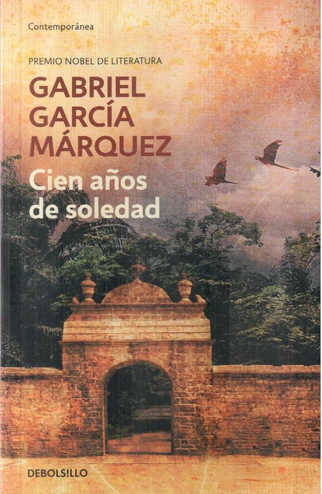
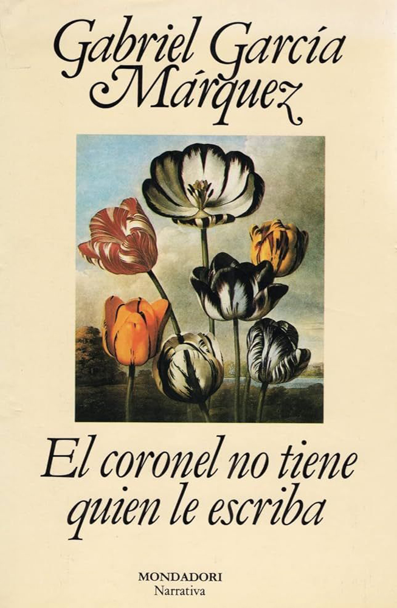

Escritor colombiano, maestro del realismo mágico y premio Nobel de Literatura.
Biografía
Gabriel García Márquez nació el 6 de marzo de 1927 en Aracataca, Colombia. Fue periodista, guionista y novelista, reconocido mundialmente por su estilo literario único.
En 1982 recibió el Premio Nobel de Literatura.
Falleció el 17 de abril de 2014 en Ciudad de México.
Recorrido por la vida y obra de Gabriel García Márquez
Video compartido desde YouTube. Todos los derechos pertenecen a su autor original
Publicaciones destacadas


